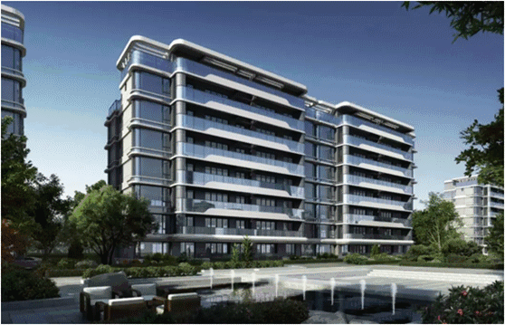

有一类房子，天生就会引得顶级圈层竞相追逐，它们向来神秘而矜贵。举个例子，高新区新川板块住宅容积率仅1.6的花园洋房。
没错，这是新川板块乃至全成都罕见的纯改善产品、出自“豪宅专家”德商手笔的德商·御璟天骄住宅。
高新区
当全城热点板块、花园洋房、1.6容积率、德商这几个关键词被放在一起，应该鲜有购房者能矜持得住了。
这样落子于热门板块的纯改善产品，一如此前“开盘即罄”的德商·迎晖天玺、天府新区三大豪宅之一的德商·御府天骄，是城市新贵与传统奢豪们都钟情的华宅。在看过德商·御璟天骄样板间的回程路上，同事不断感慨：“有钱真好。”
德商·御璟天骄效果图
这类稀贵的房子，在正式销售之前，普通购房者都难窥其真面目，就连笔者去项目踩盘的时候也被提醒：参观样板间时不要拍照。这样的房子，在买到之后，也少有人愿意转手，究其原因还是“太稀缺了”。
可能在不少购房者的眼里，高新南区应该就是豪宅扎堆之处，花园洋房要谈“稀缺”，未免过于“自负”？我们可以先来梳理一下，高新南区的供应情况。
从最热门的金融城说起，现在还有存货的，不过复地·金融岛和南城都汇7、8期住宅，前者据了解，住宅至少也明年才开，后者何时开盘更是不得而知。
讲究人居和舒居的锦城湖、大源板块内，中洲·锦城湖岸二期类别墅产品和小高层，早有开盘消息传出，但具体开盘时间至今是谜；凯德·世纪名邸以及中铁建·西派澜岸两个项目，后期的加推计划中，产品都是高层。
中和板块内有供应计划的项目较多，但都是刚需或刚改。新川板块则与中和类似，加推项目虽多，但仅有德商·御璟天骄和北大资源·紫境府为纯改善产品。
通过以上梳理我们发现，高新区内今年能买到的新盘并不多，且大多为刚需或刚改定位，产品以小高层和高层居多。持币代购的改善购房者们，想要在高新区内买到一个纯改善的洋房产品，难度极高，更别说还是住宅容积率仅1.6的花园洋房了。
从这一意义上来看，要说德商·御璟天骄是新川板块，乃至全高新区都稀缺的产品，实不为过。除此之外，着眼新川板块，随着土地成本越来越高，开发商想要再打造这样的低密项目，可能设计部门得跟财务打一架才行。
据统计，2017年以来，新川板块出让土地共6块，其中最低成交楼面价为8200元/平方米，为宸光和悦项目所在地块，其余土地成交楼面价皆在万元以上，最高来到了13900元/平方米。
2017年至今新川土拍一览
供地数量稀少，土地价格高企的新川，在全城新房限价之下，想要再现低密纯改善项目，其难度可想而知。在此背景之下，德商打造出了住宅仅1.6容积率的纯改善项目，德商·御璟天骄是如何做到的？
花园洋房、1.6容积率
从整体上看，德商·御璟天骄项目占地约30.41亩，共规划有9栋建筑，其中2栋高层，分别是32层的高层住宅，以及33层的商办公寓，分别位于项目的两端，呈东北-西南相呼应的姿态；其余7栋皆为6+1的花园洋房。
德商·御璟天骄项目规划图
住宅低至1.6的容积率，其秘诀就在于两栋高层建筑了。规划显示，32层的高层住宅，居于项目东北角，有且仅有一栋，而33层的商办公寓则与住宅区完全隔开。
此外，在德商·御璟天骄仅30余亩的社区中，70%的小区都被园林所覆盖。在这其中，德商以月季、绣球、月桂、绿篱、木春菊、玫瑰、墨西哥鼠尾草这7种花艺为主题，设计了7座水晶花园，实现全年皆有花可赏，四季之景不同的社区花园景观。
德商·御璟天骄园林实拍图
在此基础之上，德商·御璟天骄还设计有镜面叠级水景，以及200米蓝花楹和红豆杉树阵景观中轴，串联水晶花园，实现内部景观的整体统一。
德商敢在寸土寸金的新川，打造“天骄系”纯改善产品，其自信源于何处？
“豪宅专家”德商的产品力
“楼市黑马”、“成都网红盘”，年初德商·迎晖天玺“开盘即罄”的盛况，让业内人士对德商打造高端豪宅的能力，以及德商的品牌影响力，有了新的认识。而此次推出的德商·御璟天骄洋房产品更是有“小天玺”的美誉，可见其产品力也是受到了业界认可的。
公开资料显示，自2016年起，德商一直遵循“立足西南、跨越全国”的布局战略。截至2019年，德商已在成都、云南、粤港澳大湾区等全国重镇有所布局，年内，全国共有10个项目在售或推出。
德商全国布局图
在德商全国布局的过程中，旗下四大产品系也被开发完善：城市顶豪系列“天玺系”、 城市菁英系列“天骄系”、城市生长系列“天悦系”，以及复合型地产项目“文旅地产系”。这其中最具代表性的，就是西南封面俱乐部官邸德商·迎晖天玺、成都天府新区三大豪宅之一德商·御府天骄、大湾区一线豪宅德商樾玺、云南文旅康养小镇普洱那勐勐项目等。
作为一家高知名度的品牌房企，德商品牌的影响力，就来自于德商的产品力，其产品力或可从德商·御璟天骄的打造上就能窥见一二。
规划显示，德商·御璟天骄高层住宅共有32层，采用2梯2户的设计，总户数为62套，建筑面积149平方米。洋房产品为7层，采用1梯2户、电梯入户的设计，面积段为147-287平方米。
德商·御璟天骄洋房标准层户型图
在这其中，洋房底跃产品为一层加负一层搭配，附赠超百平的大花园，另外，在实测中发现，地下室的采光效果也是优于市面上的绝大多数同类，甚至部分别墅产品，完全可满足居住需求。
德商·御璟天骄洋房底跃花园实拍图
在精装的规格方面，德商·御璟天骄在所有住宅产品中，都标配了新风、地暖和中央空调系统，主卧设计有定制衣帽间。为提升居住品质，室内所有硬装产品，都是选用国内外一线品牌，其中不乏有高仪、杜拉维特、汉斯格雅、西门子等大牌。
与德商·迎晖天玺一样，德商·御璟天骄也聘请了荷兰顶级设计事务所D/DOCK，操刀项目的室内设计。细节方面，所有户型，客餐厅与主卧都设计有背景墙，中央空调出风口也采用了雕花设计，在细节处也保证了美观。此外，洋房产品的地面与门槛石，还采用了天然石材，尊贵感一览无余。
德商·御璟天骄洋房标准层样板间实拍图
建筑外立面则是由设计过伦敦Tara艺术剧院、香港THR350私人寓所，以及港珠澳大桥香港口岸旅检大楼的“地标缔造者”凯达环球/AEDAS进行设计。洋房产品的楼栋外墙，大面积使用玻璃材质，搭配白色铝板，整体显得大气而时尚。据置业顾问介绍，在建筑转角处，德商·御璟天骄特别采用了270度热弯中空玻璃，纵观全成都也仅此一家。

德商·御璟天骄产品效果图
“如今的房地产竞争，不再仅仅是展示、户型、精装的竞争，更是能够给予客户有匹配度的服务的竞争。”从德商·御府天骄的“鲁道夫”儿童教育服务体系，再到德商·迎晖天玺引入长安俱乐部服务，德商的每个项目，都对社区服务有着极其严苛的品质要求。在此基础之上，“天玺会”和“御璟阁”也是作为社区配套服务而出现。
德商·御璟天骄结合中西方精英圈层生活习惯，采用了“6M”尊贵物业服务，其中包括了御用管家（Management）、守护卫士（Muniment）、精致生活（Meticulous）、专业定制（Made）、贵宾接待（Meet）、运动中心（Movement）六大板块。
为保证社区居住的纯粹性，德商·御璟天骄将商业公寓与住宅完全剥离，并引入旗下高端酒店式服务品牌“御璟阁”，对商业公寓进行管理。值得注意的是，在33层商业公寓的顶楼，德商特别打造了一处峰层私人会所，标配有云端健身中心、私家宴会厅、商务办公空间等业态，随时为住宅业主提供尊奢服务。
峰层私人会所效果图
有着6+1的真豪宅产品、住宅1.6的超低容积率，以及“御璟阁”+“6M”尊贵服务加持的德商·御璟天骄，在整个新川乃至高新区，都是极具竞争优势的。值得注意的是，德商·御璟天骄将于5月初预售，在此次的预售中，高层与洋房全部202套房源都将推出，持币代购的高新区改善置业者们，不应错过。
预售信息
面积段
高层：149㎡
洋房：147-287㎡
项目地址
成都·高新区·观东三街158号
咨询电话
028-85335888
广告